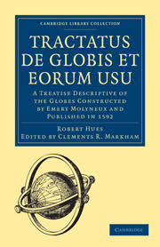

<!DOCTYPE html>
<html lang="en">
	<head>
		<meta charset="UTF-8" />
		<meta name="viewport" content="width=device-width, initial-scale=1.0" />
		<title>Charlie Canopus Page</title>
		<style>
			h1 {
				margin-bottom: 3px;
			}
			h3 {
				margin-top: 0;
				margin-bottom: 2em;
			}
			h1,
			h3 {
				display: flex;
				justify-content: center;
			}

			.start-imgs {
				display: flex;
				align-items: center;
				gap: 1em;
				flex-direction: column;
				margin-left: 13em;
				margin-right: 8em;
				margin-top: 1.5em;
			}

			.intro {
				display: flex;
				justify-content: space-around;
				margin-right: 12.5em;
			}
			img {
				height: 225px;
				width: 350px;
			}

            .history {
                margin-top: 3em !important;
                margin: 0 5em;
            }

            .history-img {
                display: flex;
                justify-content: center;
                gap: 2em;
            }
		</style>
	</head>
	<body></body>
</html>

<div class="intro">
	<div class="start-imgs">
		
		
		
	</div>
	<div>
		<h1>Canopus</h1>
		<h3>Charlie Kerfoot</h3>
		<p>
			Canopus is the brightest star in the southern constellation of Carina and
			the second-brightest star in the night sky (after Sirius).
		</p>
		<ul>
			<li>
				Located around 310 light-years from the Sun, Canopus is a bright giant
				of spectral type A9, so it is essentially white when seen with the naked
				eye.
			</li>
			<li>
				It has a luminosity over 10,000 times the luminosity of the Sun, is
				eight times as massive, and has expanded to 71 times the Sun's radius.
				Its enlarged photosphere has an effective temperature of around 7400 K.
			</li>
			<li>
				Canopus is undergoing core helium burning and is currently in the
				so-called blue loop phase of its evolution, having already passed
				through the red-giant branch after exhausting the hydrogen in its core.
			</li>
			<li>
				Canopus is a source of X-rays, which are likely being emitted from its
				corona.
			</li>
		</ul>
		<h2>History</h2>
		<p>
			The Arabic Muslim astronomer Ibn Rushd went to Marrakesh (in Morocco) to
			observe the star in 1153, as it was invisible in his native Córdoba,
			Al-Andalus. He used the different visibility in different latitudes to
			argue that the Earth is round, following Aristotle's argument which held
			that such an observation was only possible if the Earth was a relatively
			small sphere.[24]
		</p>
		<p>
			English explorer Robert Hues brought Canopus to the attention of European
			observers in his 1592 work Tractatus de Globis, along with Achernar and
			Alpha Centauri, noting:
		</p>
		<blockquote>
			"Now, therefore, there are but three Stars of the first magnitude that I
			could perceive in all those parts which are never seene here in England.
			The first of these is that bright Star in the sterne of Argo which they
			call Canobus. The second is in the end of Eridanus. The third is in the
			right foote of the Centaure."
		</blockquote>
	</div>
</div>

<div class="history">
	<p>
		In Frank Herbert's 1965 novel Dune and other novels in his Dune universe,
		the fictional planet Arrakis is a vast desert world. It is home to sandworms
		and Bedouin-like humans called the Fremen. It is the third planet from a
		real star in our night sky. That star is Canopus. In Herbert's novel, the
		desert planet Arrakis is the only source of “spice,” the most important and
		valuable substance in the Dune universe. This “spice” is what makes star
		travel possible, in this fictional universe. It's possible, according to
		Wikipedia (which references the famous book Star Names: Their Lore and
		Meaning by Richard Hinckley Allen), that Herbert was influenced in his
		choice of this star as the primary for Arrakis by a common etymological
		derivation of the name Canopus:
	</p>
	<blockquote>
		"… as a Latinization (through Greek Kanobos) from the Coptic Kahi Nub
		(“Golden Earth”), which refers to how Canopus would have appeared over the
		southern desert horizon in ancient Egypt, reddened by atmospheric
		absorption."
	</blockquote>
    <div class="history-img">
        
	    
    </div>
</div>

<h2>How to Find Canopus</h2>

<p>To find Canopus, the second-brightest star in the night sky, you can:</p>

<ol>
	<li>Find Sirius in the constellation Canis Major</li>
	<li>Look down towards the southern horizon from Sirius</li>
	<li>Find Canopus, which is about 36 degrees below Sirius</li>
</ol>
